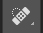
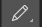
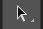

Photoshop er et fantastisk program, men kan også virke meget overvældende grunden til dens mange funktioner. Hvis du har ønsket dig at starte med at bruge Photoshop, men du ved ikke rigtig, hvordan du skal starte, så vil vi lære dig de helt grundlæggende værktøjer i programmet.
Er du klar? Lad os komme i gang.
Værktøjslinjen
Vi kommer til at kigge på de fleste værktøjer, men ikke dem alle. Det her vil give dig et overblik og en ide om, hvordan de forskellige værktøjer fungerer, men for at virkelig forstå dem - handler det bare om at lege løs og prøv dig frem!
Som en lille bonus, vil jeg også skrive genvejsknapperne for hvert værktøj, så du ikke behøver at klikke på dem hver gang, der er der ingen, der gider, vel?
Flytteværktøj (V)
Flytteværktøjet lader dig flytte dine objekter i den valgte lager. For at bruge den, klik hvor som helst på lærredet og træk. Mens du trækker, så vil det valgte Photoshop lag bevæg sig med musen.
Markeringsrammeværktøj (M)
Dette værktøj hjælper dig med at vælge en del af lærredet i en bestemt form. Som standard, får du et rektangel, men du kan også vælge en cirkel form (ved at du højreklikker på værktøjet og holder den nede)
Lassoværktøj (L)
Lassoværktøjet er et mere frit værktøj, der lader dig trække rundt i lærredet og vælger alt, hvad lassoen har dækket. Så er der Polygonlassoværktøj, som lader dig oprette et område ved at klikke rundt i lærredet og skabe punkter. Og så har vi Magnetisk lassoværktøj, som fungerer som den almindelige Lasso, men forsøger at registrere kanter for dig automatisk.
Tryllestavværktøj (W)
Ved at klikke et område med dette værktøj, vil den fortælle Photoshop at vælge det valgte område, du klikkede på og alt omkring den, som ligner den. Værktøjet kan bruges til at fjerne baggrund på et billede.
Beskæringsværktøj (C)
Værktøjet bruges til at beskære dine billeder. Du kan specificere størrelsen og begrænse beskæringsværktøjet med brugedefinerede størrelser, ellers kan du beskære til, hvilken størrelse du har lyst til.
Pipetteværktøj (I)
Med dette værktøj, kan du klikke på en hvilken som helst del af lærredet og tage den farve, du har ramt efter. Værktøjet vil ændre din forgrundsfarve til den farve, du har valgt på lærredet.
Pletreparationspensel (J)
Med dette værktøj, vælger du en del af et billede og bruger den til at male over en anden del. Designer har brugt dette værktøj til at fjerne urenheder i f.eks. en models ansigt.
Pensel & blyantværktøj (B)
Penselværktøjet er et værktøj, som efterligner en pensel, og blyantværktøjet efterligner er et værktøj, som efterligner en blyant. Men med penselværktøjet, kan du vælge imellem forskellige pensler, og du kan endda male med blade eller andre former.
Oversigtspenselsværktøj (Y)
Værktøjet lader dig male tilbage i tiden. Photoshop holder øje med de bevægelser, du foretager dig og værktøjet lader dig male fortiden tilbage til det nuværende billede. F.eks. lad os sige at du har gjort hele billedet lyst, men du vil gerne have at et bestemt område skal være, som den var, før du gjorde hele billedet lyst – brug værktøjet og mal over det område, du gerne vil have skal være før ændringen.
Viskelæderværktøj (E)
Viskelæderværktøjet minder om penselværktøjet, men sletter i stedet for at male.
Malerspand og farveforløbsværktøj (G)
Malerspandsværktøjet lader dig fylde et specifikt område med den nuværende forgrundsfarve. Farveforløbsværktøjet vil skabe et farveforløb med en sammensætning af forgrund og baggrundsfarven.
Slørings, skarpheds og udtværingsværktøj (Ingen genvejsknap)
Alle de her tre værktøjer fungerer som pensler, men kan noget forskelligt. Sløringsværktøjet vil sløre et område, hvor du har malet på, Skarphedsværktøjet vil gøre et område skarpt og udtværingsværktøjet vil udtvære området omkring lærredet. Den kan være brugbart, hvis du skal sammensætte farver på en fed måde eller for at skabe hvirvelvinde og røg, som du kan tilføje til dine billeder.
Penværktøjet (P)

Penværktøjet bruges oftest til at tegne vektorbaseret grafik. Den kan også bruges til at skabe kurve/punkter for at skabe former. Dog skal det lige siges, at værktøjet er mere optimalt og bedst at bruge i Adobe Illustrator end Photoshop.
Vandret tekstværktøj (T)
Værktøjet lader dig skrive tekst vandret. Ved at holde værktøjet nede, vil der komme andre muligheder op som f.eks. Lodret tekstværktøj.
Kurvemarkeringsværktøj (A)
Dette værktøj minder om Flytteværktøjet, men flytter kun kurver.
Rektangelværktøj (U)
Værktøjet giver dig muligheden for at oprette vektorbaseret rektangler, afrundede rektangler, cirkler, polygoner, linjer og brugerdefinerede figurer.
Håndværktøj (H)
Dette værktøj tillader dig at klikke og trække rundt i Photoshop lærredet. Hvis hele lærredet passer skærmstørrelsen, så vil det ikke fungere. Når du er zoomet ind i billedet, så er værktøjet godt at bruge til at nemt navigere rundt.
Farvevalgværktøj (D: for at nulstille, X: for at skifte mellem forgrunds- og baggrundfarve)
Med dette værktøj, kan du administrere de farver, du bruger. Farven på toppen er forgrundsfarven, og farven der gemmer sig, er baggrundsfarven. De to små ikoner er genvejsfunktioner. Den til venstre, som viser en short firkant oven på en hvid firkant vil nulstille din forgrund og baggrundsfarve til standard (Sort og hvid, som vises på billedet). Den dobbelthovede, bøjet pil vil skifte din forgrunds- og baggrundfarve. Ved at klikke på enten din forgrunds- og baggrundfarve, vil der dukke en farvevælger op, hvor du kan selv vælge præcis den farve, du vil have.
Paneler
Det er de indstillinger, som du ser på højre side af din skærm.
Lag
lag panelet lader dig se alle dine lag i dit Photoshop dokument. Jo mere, du bliver bekendt med programmet, vil du finde dig selv mere i den her panel end de andre. Den vil lade dig organisere og ordne dine lag, sætte blandingsindstillinger, vise eller gøre dine lag gennemsigtige, gruppere eller sammenflet dine lag og andre fede ting, som jeg ikke vil nævne nu og her, da det ikke så relevant.
Justering
Dit justeringspanel er, hvor du nemt kan skabe og redigere dine justeringslager. Justeringslager er lager, som giver en effekt for alle lager, der er nedenunder den, og den kan nemt slukket og tændes. De bruges oftest til farvekorrektion (nemlig Niveauer og Kurver, men der er andre slags forskellige justeringer, som du kan bruge.
Farvevælger
Dette panel vil give dig muligheden for nemt at ændre din forgrunds- og baggrundfarve ved køre musen hen over farverne, imens du holder den nede.
Farveprøver
Farveprøver panelet har nogle brugerdefinerede farver, som du hurtigt kan vælge imellem. Du kan også uploade nogle andre, som du har downloadet fra nettet, eller du kan oprette dine helt egne.
Oversigt
Med oversigtspanelet, kan du se alle de ændringer, du har foretaget dig. Du kan gå tilbage i tiden for at fortryde dine ændringer.
Menu

Vi vil tage et hurtigt kig på nogle vigtige punkter i de forskellige menuer.
Rediger
Du vil få muligheder, såsom kopier, klip og indsæt. Men i Photoshop, kan du også transformere lag (under Rediger > Transformer)
Billede
Her får du indstillinger for billede og lærredstørrelse. Denne menu er designet til at give et billede en effekt som en helhed, selvom du godt kan give ændringer til et specifikt lag.
Lag
Menuen her gør nøjagtig det samme ting som lag panelet, men med flere muligheder. Du kan oprette justeringslag og Smart Objects (en gruppe af lag, som bliver behandlet som et samlet objekt)
Vælg
Vælg menuen kan hjælpe dig med at forbedre det valgte område eller oprette helt nye områder ved af f.eks. funktionen Farveområde.
Filter
Filter menuen bringer dig en masse brugerdefinerede Photoshop filters, som kan sløre, skærpe, fordreje og ændre dit billede eller billedets lag. Den eneste måde at lære dem bedre at kende er at lege med dem, det vil nok tag sin tid, men det vil sikkert være tiden værd.
Vis
Med denne menu, får du forskellige vis muligheder, som lader dig skjule eller vise hjælpelinjer, som du har lavet. Og du kan også fastgøre linjer til hjørner og gitter. Som standard er gitteret usynligt, så du kan også skjule og vise den i Vis menuen.
Vindue
Vindue lader dig skjule og vise bestemte vinduer og paneler. Du kan også selv ordne dine Photoshop menuer og paneler, som du vil og gemme dem som en vindues forudindstilling.
Nyttige links til start af Photoshop:
The Complete Beginner's Guide to Adobe Photoshop
Basics of Photoshop #01 - What Does Everything Do?
Du kan kontakte Sharmarke Hujale, forfatteren af den her artikel på: sh@artselect.dk